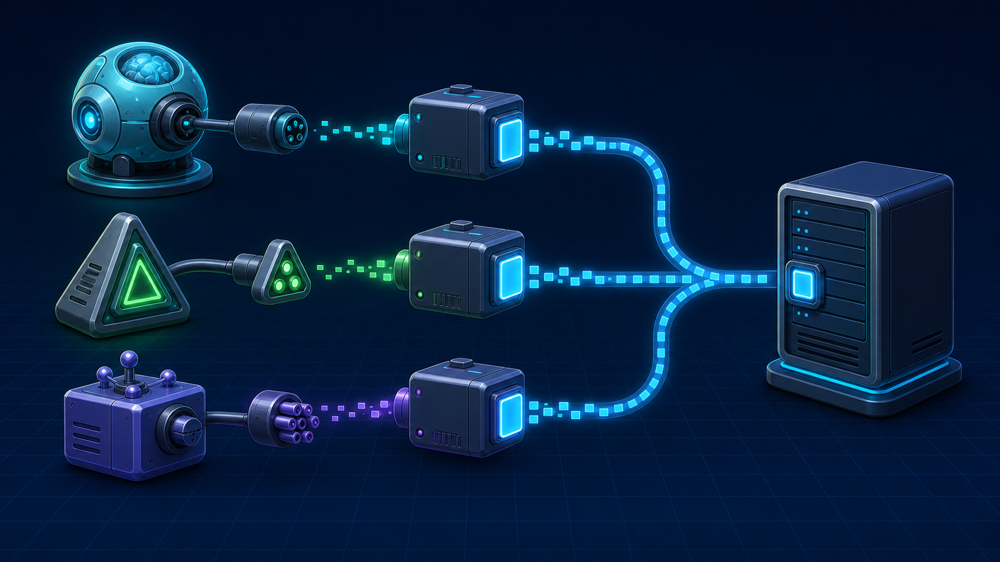
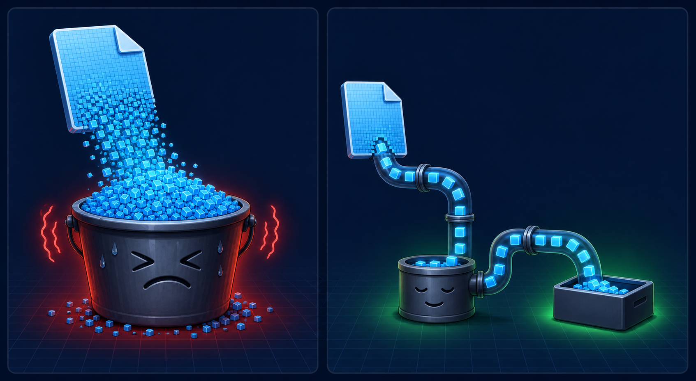

4편 · 56분 — 배운 부품을 전부 조립
OT에서 본 그 앱을 시작한다. 지난 섹션 네스트 부품이 전부 실전 투입된다.
nest new ai-agents + Vercel AI SDK 패키지 설치.env에 API 키 (5-3 회수 — 유출·과금 주의, 무료 크레딧 안내)
어댑터만 갈아끼우면 모델이 바뀐다.
첫 AI 응답을 받아본다. 이 호출 하나가 요즘 서비스 개발의 절반.
generateText로 첫 응답 받기// 어댑터만 갈아끼우면 모델이 바뀐다 const { text } = await generateText({ model: openai('gpt-5.4'), // → anthropic(...) 로 교체 가능 prompt: userMessage, });
ChatGPT처럼 글자가 흘러나오게. 1-3의 스트림이 여기서 부활한다.

const { text } = await generateText({ … }); res.json({ text }); // 완성될 때까지 침묵
const result = streamText({ … }); return result .toDataStreamResponse(); // 조각조각 (SSE)
streamText + SSE로 응답 흘리기대화를 기억하게 만들고 안정성을 강화해 앱을 완성한다.
MAX_HISTORY_LENGTH이제 여러분 컴퓨터엔
서비스가 두 개 있습니다.
문제는 컴퓨터를 끄면 서비스도 꺼진다는 것. 마지막 섹션, 세상에 공개하러 갑니다.